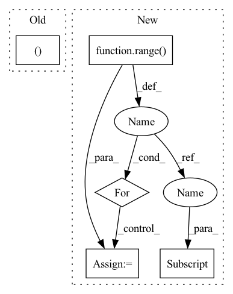

Pattern ID :1486
Before Change
return "_decoder", "_quantizer"
def forward(self, codes: torch.ByteTensor, shape: torch.IntTensor) -> torch.Tensor:
h, w = shape[0], shape[1]
return ((self._decoder(self._quantizer(codes)))[..., :h, :w].tanh() + 1) / 2
After Change
def forward(self, codes: torch.ByteTensor) -> torch.Tensor:
smallQ = self._reverses[-1](self._quantizers[-1](codes[-1]))
for i in range( self._levels - 1, -1, -1):
q = self._scatters[i](self._quantizers[i](codes[i] ))
smallQ = self._reverses[i](q + smallQ)
return self._decoder(smallQ).tanh()
In pattern: SUPERPATTERN
Frequency: 4
Non-data size: 5
Instances Fragment ID: 4388674
Project Name: xiaosu-zhu/mcquic
Commit Name: 3ca26f40dc8d00ed5fbebee4a77654f9d1d51939
Time: 2021-10-08
Author: xiaosu.zhu@outlook.com
File Name: src/mcqc/evaluation/refModel.py
M Class Name: RefDecoder
N Class Name: RefDecoder
M Method Name: forward(2)
N Method Name: forward(3)
M Parent Class: nn.Module
N Parent Class: nn.Module
M File Name: src/mcqc/evaluation/refModel.py
N File Name: src/mcqc/evaluation/refModel.py
M Start Line: 135
M End Line: 137
N Start Line: 181
N End Line: 185
Before Change
return "_decoder", "_quantizer"
def forward(self, codes: torch.ByteTensor, shape: torch.IntTensor) -> torch.Tensor:
h, w = shape[0], shape[1]
return ((self._decoder(self._quantizer(codes)))[..., :h, :w].tanh() + 1) / 2
After Change
def forward(self, codes: torch.ByteTensor) -> torch.Tensor:
smallQ = self._reverses[-1](self._quantizers[-1](codes[-1]))
for i in range( self._levels - 1, -1, -1):
q = self._scatters[i](self._quantizers[i](codes[i] ))
smallQ = self._reverses[i](q + smallQ)
return self._decoder(smallQ).tanh()
Fragment ID: 4388675
Project Name: xiaosu-zhu/mcquic
Commit Name: 3ca26f40dc8d00ed5fbebee4a77654f9d1d51939
Time: 2021-10-08
Author: xiaosu.zhu@outlook.com
File Name: src/mcqc/evaluation/refModel.py
M Class Name: RefDecoder
N Class Name: RefDecoder
M Method Name: forward(2)
N Method Name: forward(3)
M Parent Class: nn.Module
N Parent Class: nn.Module
M File Name: src/mcqc/evaluation/refModel.py
N File Name: src/mcqc/evaluation/refModel.py
M Start Line: 135
M End Line: 137
N Start Line: 181
N End Line: 185
Before Change
// for level in
cls_loss, box_loss = None, None
total_loss = cls_loss + self.box_loss_weight * box_loss
return total_loss, cls_loss, box_loss
After Change
cls_targets, box_targets, num_positives):
cls_losses, box_losses = [], []
for level in range( self.levels):
cls_loss = self._classification_loss(
cls_outputs[level] , cls_targets[level], num_positives)
box_loss = self._regression_loss(
box_outputs[level], box_targets[level], num_positives)
cls_losses.append(cls_loss) Fragment ID: 4388672
Project Name: sevakon/efficientdet
Commit Name: bc6fdb9bf709cc82c92ea44a740baf04bd343ed1
Time: 2020-05-04
Author: sevakonyakhin@gmail.com
File Name: utils/tools.py
M Class Name: DetectionLoss
N Class Name: DetectionLoss
M Method Name: forward(6)
N Method Name: forward(6)
M Parent Class: nn.Module
N Parent Class: nn.Module
M File Name: utils/tools.py
N File Name: utils/tools.py
M Start Line: 20
M End Line: 25
N Start Line: 22
N End Line: 33
Before Change
def forward(self, x: torch.Tensor) -> Tuple[torch.ByteTensor, torch.IntTensor]:
x = (x - 0.5) / 0.5
shape = x.shape
n, c, h, w = shape
if c == 1:
x = x.expand(1, 3, 1, 1)
hPad = max(0, 32 - h)After Change
def forward(self, x: torch.Tensor) -> List[torch.LongTensor]:
codes = list()
latent = self._encoder(x)
for i in range( self._levels):
head = self._heads[i]
z = head(latent)
if i < self._levels - 1:
mapper = self._mappers[i]
latent = mapper(latent)
code = self._quantizers[i](z)
hard = self._deQuantizers[i](code)
latent = latent - hard Fragment ID: 4388679
Project Name: xiaosu-zhu/mcquic
Commit Name: 3ca26f40dc8d00ed5fbebee4a77654f9d1d51939
Time: 2021-10-08
Author: xiaosu.zhu@outlook.com
File Name: src/mcqc/evaluation/refModel.py
M Class Name: RefEncoder
N Class Name: RefEncoder
M Method Name: forward(2)
N Method Name: forward(2)
M Parent Class: nn.Module
N Parent Class: nn.Module
M File Name: src/mcqc/evaluation/refModel.py
N File Name: src/mcqc/evaluation/refModel.py
M Start Line: 106
M End Line: 114
N Start Line: 136
N End Line: 150
Before Change
total_loss = global_ball_loss + local_ball_loss + event_loss + seg_loss
return pred_ball_position_global, pred_ball_position_local, pred_events, pred_seg, total_loss, None
After Change
target_ball_global = torch.zeros_like(pred_ball_global)
target_ball_local = torch.zeros_like(pred_ball_global)
target_events = torch.zeros((batch_size, 2), device=self.device)
for idx in range( batch_size):
target_ball_global[idx] = create_target_ball(global_ball_pos_xy[idx], sigma=1., w=self.w, h=self.h,
thresh_mask=0.01, device=self.device)
target_ball_local[idx] = create_target_ball(local_ball_pos_xy[idx] , sigma=1., w=self.w, h=self.h,
thresh_mask=0.01, device=self.device)
target_events[idx] = create_target_events(event_class[idx], device=self.device)
global_ball_loss = self.ball_loss_criterion(pred_ball_global, target_ball_global)
local_ball_loss = self.ball_loss_criterion(pred_ball_local, target_ball_local) Fragment ID: 4388654
Project Name: maudzung/ttnet-real-time-analysis-system-for-table-tennis-pytorch
Commit Name: 2d3bbff4dfe2976f33c01a4ccc914b01fd71cfe6
Time: 2020-06-01
Author: nguyenmaudung93.kstn@gmail.com
File Name: src/models/unbalanced_loss_model.py
M Class Name: Unbalance_Loss_Model
N Class Name: Unbalance_Loss_Model
M Method Name: forward(7)
N Method Name: forward(6)
M Parent Class: nn.Module
N Parent Class: nn.Module
M File Name: src/models/unbalanced_loss_model.py
N File Name: src/models/unbalanced_loss_model.py
M Start Line: 24
M End Line: 31
N Start Line: 23
N End Line: 46